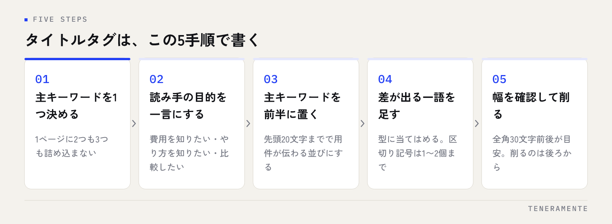

検索順位を上げたいとき、最も費用がかからず、最も早く直せるのがタイトルタグです。ページの中身を書き直すより先に、ここを整えるだけで検索結果での見え方が変わります。ただし、文字数を数えることだけがタイトルタグの書き方ではありません。決めるべき順番があります。
📌 この記事の結論
タイトルタグは主キーワードを前半に置き、全角30文字前後に収めるのが基本です。ただし表示の切れ目を決めているのは文字数ではなく幅なので、数え方より「先に読まれる位置に何を置くか」で考えます。ページごとに1つずつ、重複なく付けてください。
01タイトルタグは、検索結果で最初に読まれる一行
タイトルタグ（<title>）は、そのページが何のページかをブラウザと検索エンジンに伝える要素です。検索結果では青い見出しとして表示され、ブラウザのタブやブックマークの名前にもなります。SNSで共有されたときの見出しにも使われます。
重要なのは、検索結果で読み手が最初に目にする文字列がここだという点です。検索した人は、一覧に並んだ見出しを上から順に眺めて、開くページを選びます。順位が上がっても、見出しが自分の探しものと関係なさそうに見えれば、そのページは開かれません。
ページの中身がどれだけ充実していても、タイトルタグが「トップページ」「サービス」のままでは、その良さが検索結果に出てきません。自社サイトを見直すとき、最初に全ページのタイトルタグを一覧にしてみてください。サイトそのものの作り替えを検討している段階であれば、ホームページ制作費用のガイドで全体の進め方を確認してから、細部に入るほうが手戻りがありません。
02文字数の目安は全角30文字前後。ただし決めているのは幅
タイトルタグの文字数の目安としてよく言われるのが、全角30文字前後です。これより長い部分は検索結果で「…」と省略されます。まずはこの範囲を目安に書いてください。
ただし、厳密に文字数で切られているわけではありません。表示が切れる位置を決めているのは文字の幅です。同じ30文字でも、ひらがなと漢字が中心の文と、英数字や記号が多い文では、実際に表示される量が変わります。半角英数字は全角の半分程度の幅なので、英語のサービス名が入ると少し多く表示できます。
また、スマートフォンとパソコンでも表示される量は変わります。文字数ぴったりに詰めることを目標にしても、環境によっては結局切れます。
数えるより、前半を守る
文字数の調整に時間をかけるより、先頭20文字までで用件が伝わるかを確認するほうが実用的です。後ろが切れても意味が通る並びにしておけば、環境による差を気にせずに済みます。会社名をタイトルの末尾に置く慣習は、この考え方に沿ったものです。
03タイトルタグの書き方は、この5手順で決まる
文章のセンスは要りません。次の順に決めていけば形になります。

まずそのページで狙う主キーワードを1つに決めます。1ページに2つも3つも詰め込むと、どれも中途半端になります。キーワードの選び方そのものに迷う場合は、SEOキーワードの選び方から先に整理してください。
次に、そのページを開く人が何を知りたくて検索しているかを一言にします。「費用を知りたい」「やり方を知りたい」「比較したい」。ここが決まると、タイトルに足すべき言葉が見えてきます。
そのうえで主キーワードを前半に置き、他社と差が出る一語を足し、最後に幅を確認して削ります。削るのは後ろからです。
04クリックされるタイトルには、いくつかの型がある
読み手の目的に応じて、使える型が決まっています。無理に考え出すより、型に当てはめるほうが早く、外れも少なくなります。
| 型 | 形 | 向いているページ |
|---|---|---|
| 説明型 | 主キーワード｜内容の補足 | サービス紹介・会社案内 |
| 方法型 | 主キーワード｜〜のやり方と手順 | ノウハウ記事・ガイド |
| 比較型 | 主キーワード｜違いと選び方 | 比較ページ・選定の記事 |
| 数字型 | 主キーワード｜◯つの手順 | チェックリスト・手順書 |
| 対象明示型 | 主キーワード｜〜の方へ | 業種別・地域別のページ |
区切りには「｜」や「【】」がよく使われます。読みやすさのための記号なので、多用すると逆に読みにくくなります。1つのタイトルに区切り記号は1〜2個までにしてください。
数字を入れる型は目を引きますが、記事の中身と数が合っていることが条件です。「5つの手順」と書いて本文に3つしかない状態は、読み手の信頼を損ないます。
05やりがちな失敗と、その直し方
作業していて頻出するのが次の5つです。どれも直すのは数分で済みます。
- 全ページが同じタイトル：サイト名だけが並んでいる状態です。ページごとに固有の内容を先頭に置きます
- 会社名が先頭にある：社名で検索される場合を除き、社名は末尾に回します。先頭の貴重な位置を、毎ページ同じ文字列で使うのは損です
- キーワードの詰め込み：「名古屋 ホームページ制作 格安 安い 制作会社」のような羅列は、読み手にとって意味が取れません
- 中身と合っていない：料金が書かれていないページに「料金」と入れるなど。開いた人はすぐ戻ります
- 空欄や初期値のまま：「新規ページ」「Home」が残っているケースは、実際によく見つかります
同じタイトルが並んでいないか確認する
タイトルの重複は、自分では気づきにくい問題です。Search Console や、サイト内を巡回してタイトルを一覧化するツールを使えば、重複しているページをまとめて洗い出せます。まず一覧にして、同じ文字列が並んでいないかだけ確かめてください。
06書いたタイトルが、検索結果で書き換わることがある
設定したタイトルタグが、検索結果ではそのまま表示されないことがあります。Google は、検索した言葉との関係でより適切だと判断した場合、ページ内の見出しなど他の部分から見出しを作ることがあると公表しています。
書き換えが起きやすいのは、タイトルが極端に長い場合、キーワードが羅列されている場合、そしてページの中身と合っていない場合です。逆に言えば、内容を素直に表した簡潔なタイトルは書き換えられにくいということです。
書き換えられたときに、無理に元へ戻そうとする必要はありません。まず本文の見出し構成を見直してください。タイトルと<h1>、そして本文の内容がずれていないかを確認すると、原因が見つかることがあります。
07公開したら終わりにせず、見直しを回す
タイトルタグは一度書いて放置せず、反応を見て直します。手順は簡単です。
- Search Console で、表示回数はあるのにクリックが少ないページを洗い出す
- そのページのタイトルを、検索されている言葉と見比べる
- 直すのは前半の20文字だけ。全体を書き換えない
- 直した日付を記録し、数週間おいてから同じ指標を見る
- 一度に直すのは数ページまで。まとめて変えると、何が効いたか分からなくなる
順位が上がらない原因はタイトルだけとは限りません。検索順位が上がらない原因もあわせて確認すると、手を付ける順番が整理できます。
タイトルタグと h1 は同じ文章でよいですか？
タイトルを変えると順位は下がりますか？
地域名は入れたほうがよいですか？
08まとめ：タイトルタグは、最も早く効く一手
タイトルタグの書き方は、主キーワードを1つに絞り、前半に置き、全角30文字前後を目安に収める。型に当てはめ、区切り記号は控えめにし、中身と合っていることを確かめる。この順番です。文字数を厳密に数えることより、先頭20文字で用件が伝わるかを見てください。
そして、タイトルタグの見直しが効くのは、直したい人が自分で直せる状態にサイトがあるときです。更新のたびに制作会社へ依頼が必要な作りだと、この小さな改善が回らなくなります。
TENERAMENTEでは、公開後に自分たちで育てられることを前提としたHP/LP作成をお引き受けしています。いまのサイトのタイトルを見直したい、あるいは作り直しを検討中という段階でしたら、お問い合わせからご相談ください。